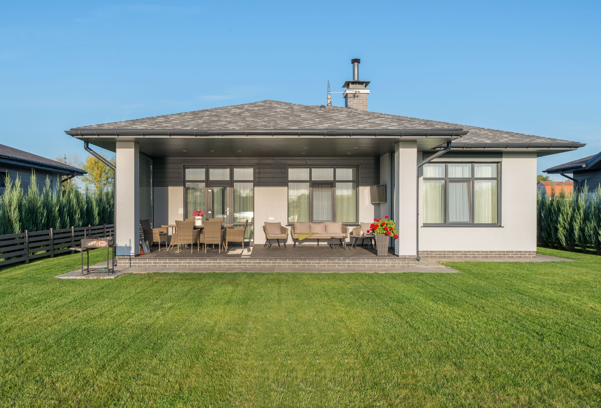
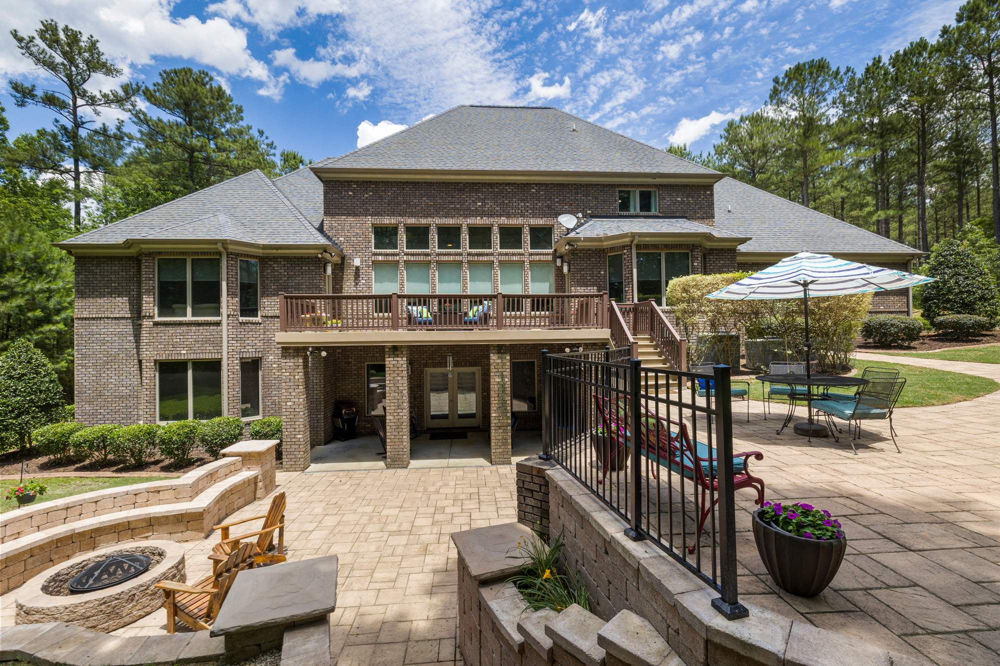
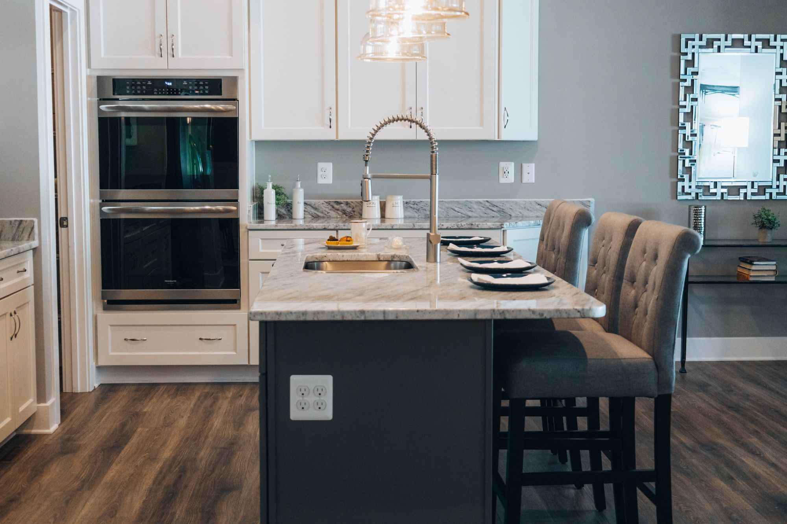
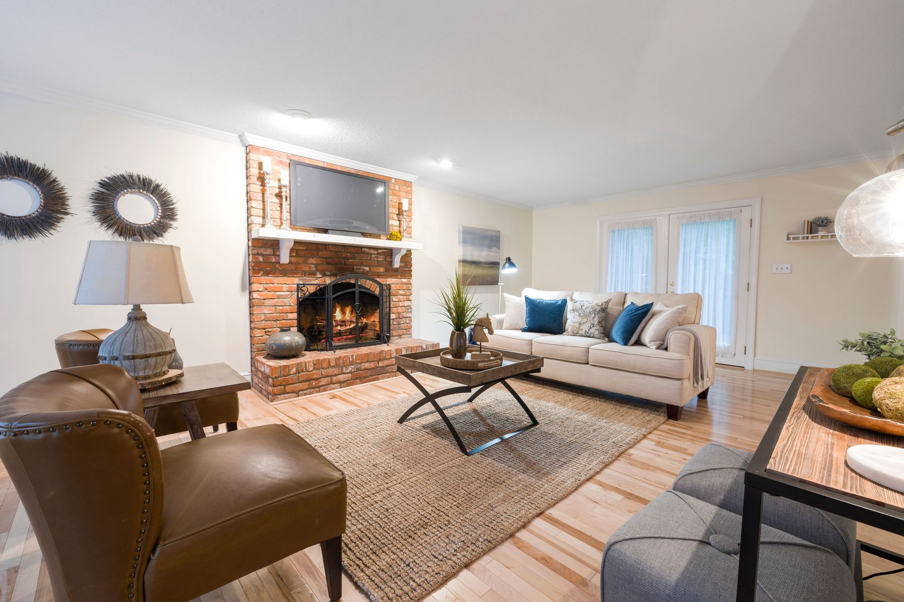
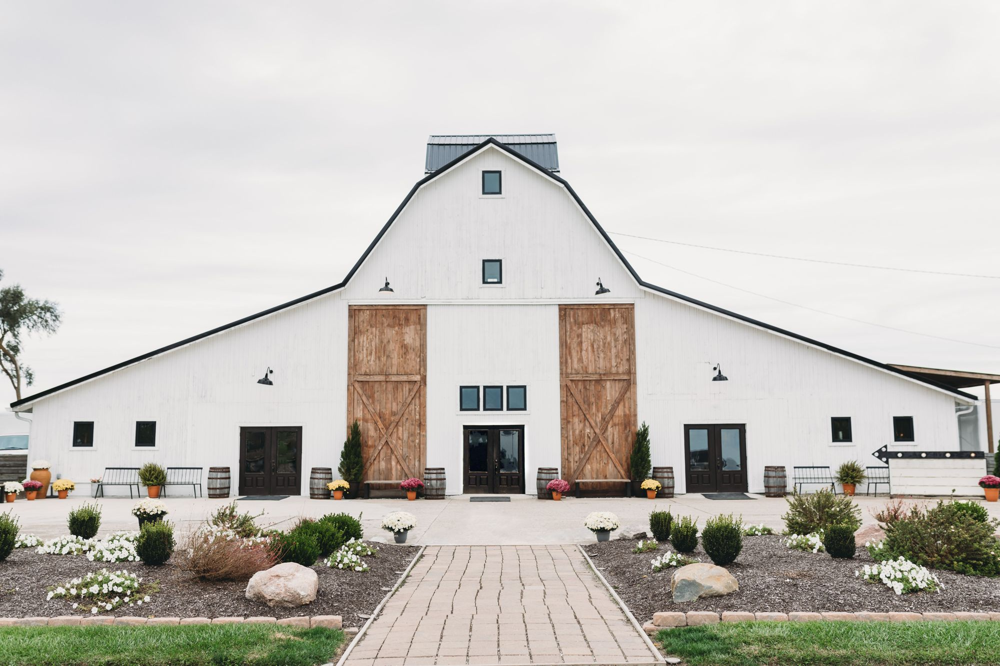
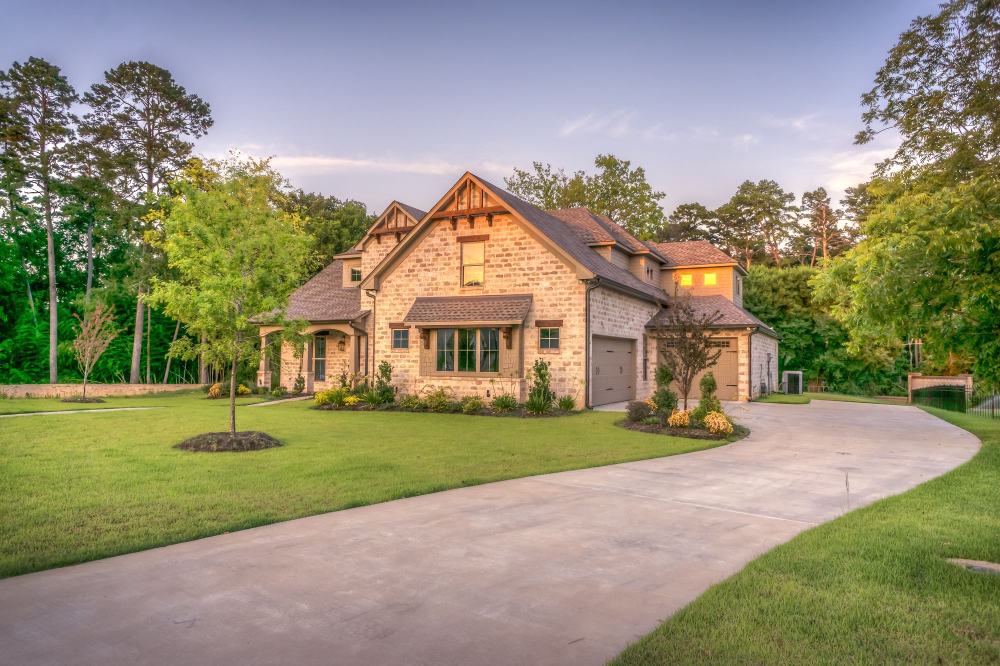
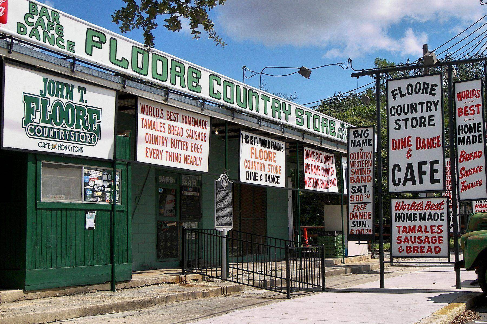
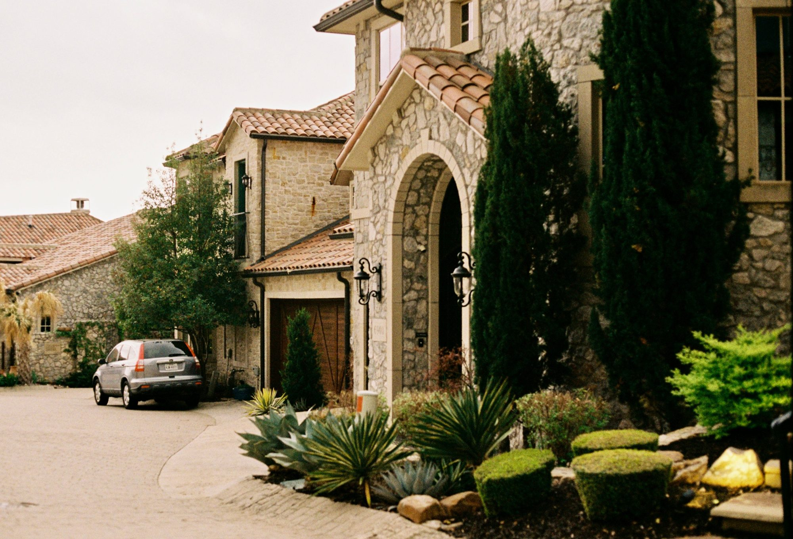

01
Kendall County, Texas
A golf resort community in the hills just outside Boerne, with homes around the course.
Life around the course
Tapatio Springs is a resort community in the Hill Country just outside Boerne, built around a golf course and resort.
Homes sit along the fairways and on the hillsides around them, from smaller homes and condos to custom houses, ten minutes from Boerne's Main Street.
Saved searches
Each card opens a live search of LERA MLS listings, updated as they change.

01

02

03

04
<!-- IDX_ZONE: homes-for-sale-tapatio-springs-tx-feed -->
The newest Tapatio Springs listings in one compact row, six to eight homes. Builder places the IDX Broker hotsheet shortcode here in its compact layout.
Tapatio Springs mixes full-time residents with weekend owners. Homes range from condos and smaller houses near the resort to larger custom homes on the hills.
Boerne's Main Street, its shops and restaurants, and the Cibolo Nature Center are about ten minutes away.
Day to day
School information is factual and by district. Always confirm a specific address in the district's school finder.
Questions
It sits just outside the city of Boerne, in Kendall County, about ten minutes from Main Street.
Boerne ISD for most addresses. Confirm any address with the district.
No. The resort and its course are separate from the homeowners association.
It depends on the HOA and county rules; confirm both before you buy.
Nearby




Next step
Tell Robert whether you want a full-time home or a weekend place, and he will show you the parts of Tapatio Springs that fit.